项目概览
Project Nexora,
From Web3
to Trust
B+C Experience Design Portfolio
Guangzhou, China (Open to Remote)
Web3 Brand DNA & 3D Assets
High-Density UI (Web/App)
High-Frequency Campaign System
Data-Driven Diagnostics
AIGC Workflow Integration
项目背景
Nexora
全球数字资产交易平台 | 强监管高信任 | 行情/资产/运营多模块
全栈主设 | B+C 端 | 设计系统搭建
2024- 2026（东南亚市场）
Figma | Lovart | Lottie
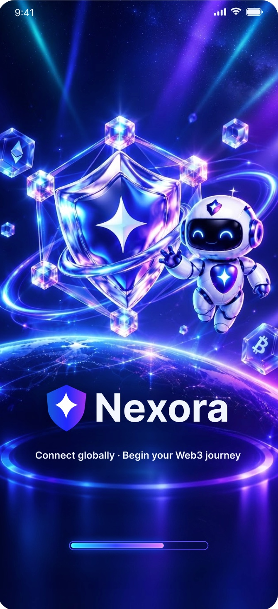
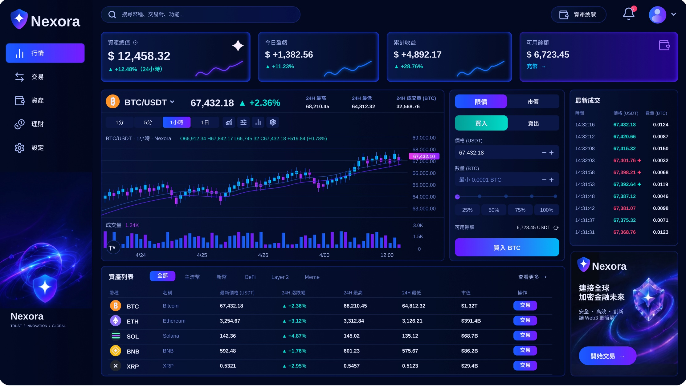
关键问题
Nexora·视觉设计优化
WE CONCLUDED THAT
VISUAL INCONSISTENCY
WAS ONLY THE SURFACE.
我们得出结论：
视觉不一致只是冰山一角
Core Memory Point
品牌同质化严重，缺乏核心记忆点
Delivery Delay
运营Banner/H5需求高频，产出流程长
Fragmented Channels
Web/H5/App 多端视觉语言不统一
Cognitive Load
行情/资产高信息密度页面缺乏美感与规范
+40% 运营物料产出效率 | +8% 核心活动点击转化率提升 | 1套 高可用3D视觉资产库
运营设计
运营设计
高频运营
物料设计
High-Frequency Campaign & Template System
重塑品牌DNA
建立3D资产库
高频模板化
AI工作流提效
高密度业务支撑： 主导活动中心、交易大赛、空投弹窗等核心营销界面的视觉设计。
AIGC+模板化提效： 沉淀Banner、H5活动页模板库；结合Lovart等AI工具，将运营物料产 出周期缩短 40%+ 。
视觉驱动转化： 利用强视觉冲击（霓虹渐变/3D元素），核心活动 点击转化率提升 8% 。
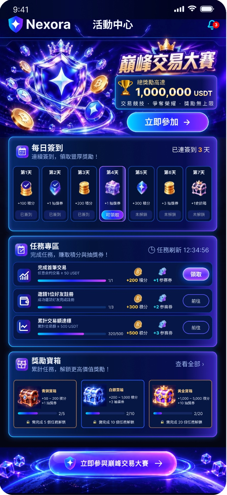
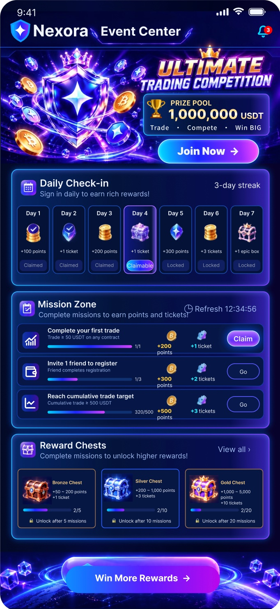
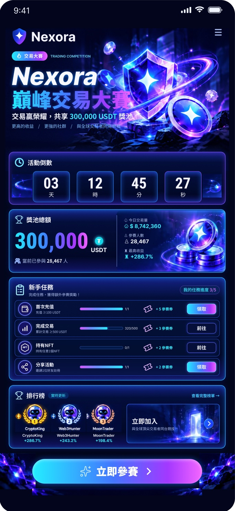
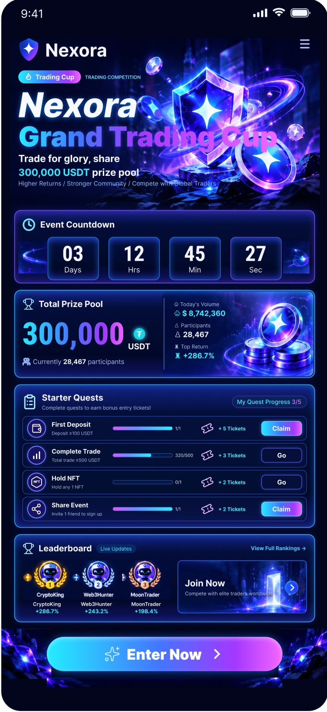
品牌与系统
Brand DNA & Design System
品牌视觉
与设计系统
品牌DNA情绪板
色彩系统
跨团队闭环协同
双核心视觉体系 ：建立“信任感（盾牌/稳定感） + 科技感（区块链/光效/3D）”的视觉语言。
高频运营模板化 ：沉淀Banner、H5活动页、社媒图模板库，支持快速搭建复用。
AIGC 融入工作流 ：结合Lovart/豆包进行概念探索与生成，Figma/PS精修，大幅缩短迭代时间。
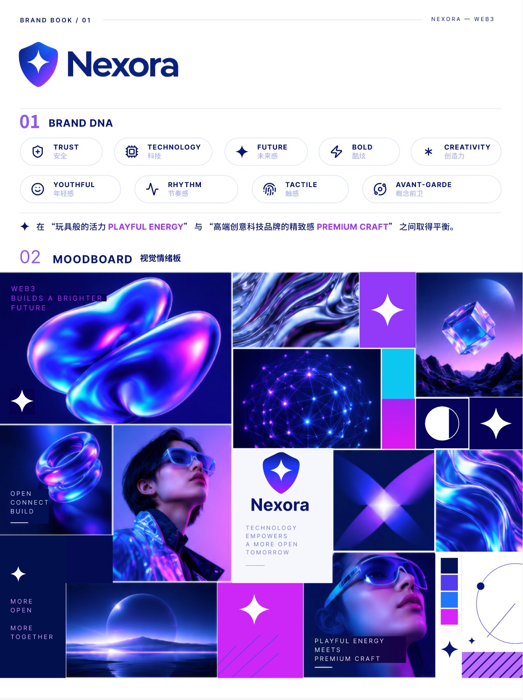
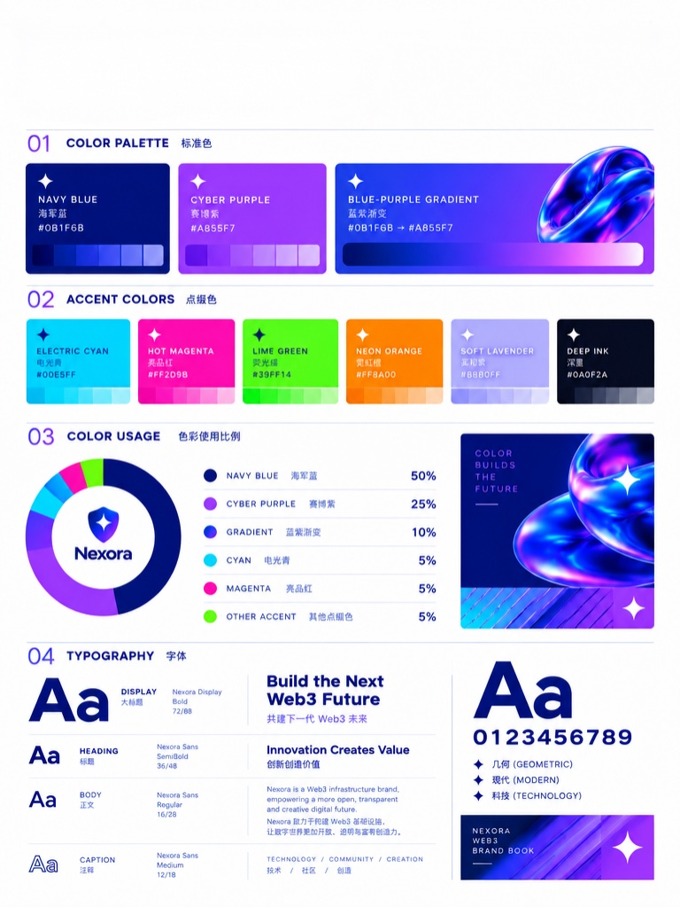
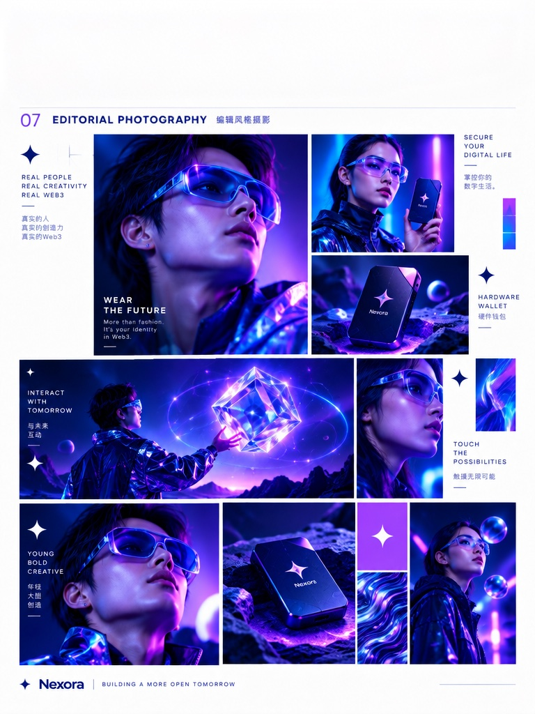
界面交付
界面交付
核心全链路
High-Fidelity UI & Full-Chain Delivery
启动页
登录安全验证
KYC身份认证
启动页 -> 登录 -> KYC身份认证
支持中英等多语种
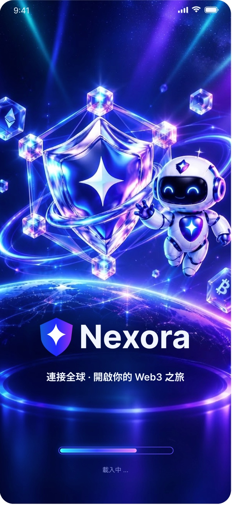
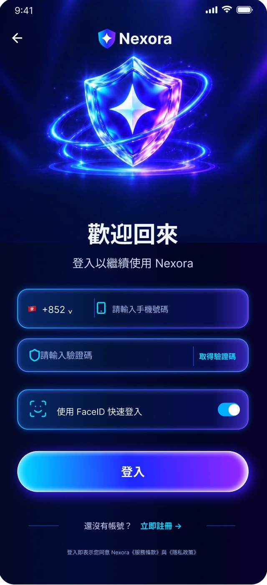
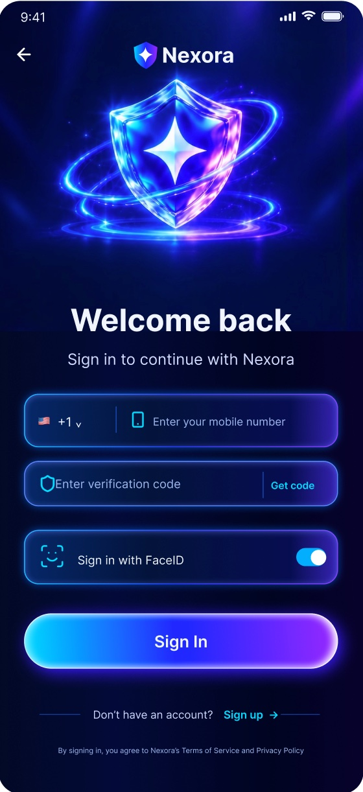
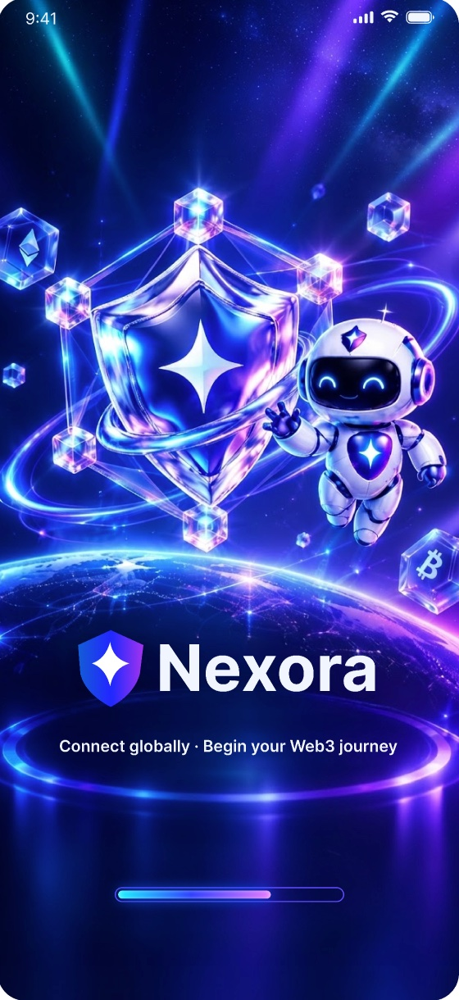
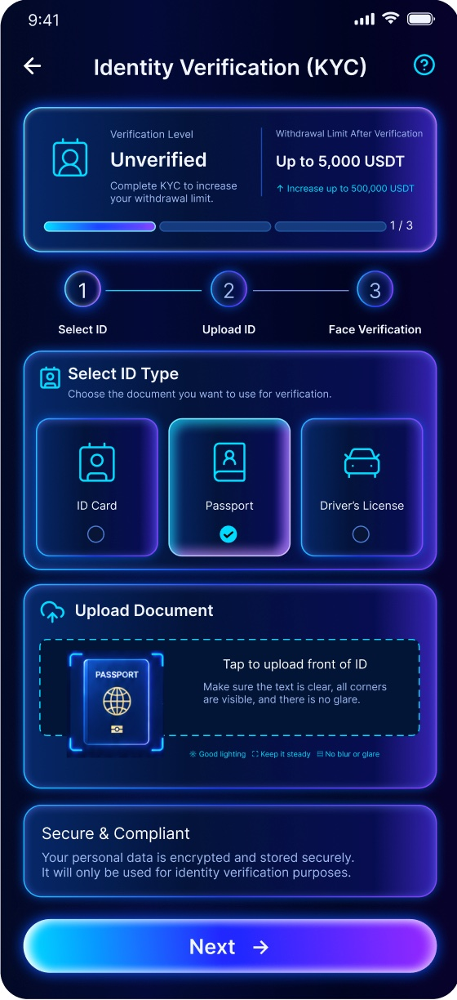
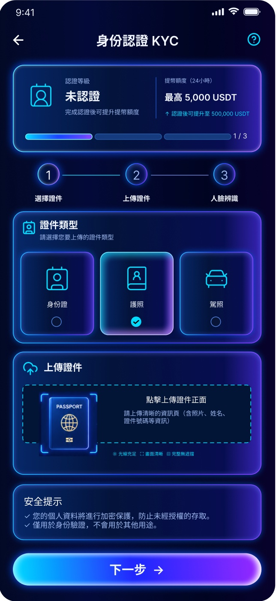
项目复盘
Retrospective & Value Creation
项目复盘
与价值沉淀
降本增效 ：将AI融入设计全流程，建立高频运营活动模板， 运营物料产出周期缩短40%+ 。
多端规范 ：统一Web/H5/App视觉语言，核心活动点 击率与转化率显著提升（如登录/注册转化提升8%） 。
品牌资产库 ：主导输出《Web3品牌视觉规范手册》及高质量3D视觉资产库，解决品牌同质化问题。
品牌视觉 · 3D资产 · AI提效 · 多端一致性
“将品牌信任感转化为可复用的设计资产，降低高频迭代下的团队协作成本。”
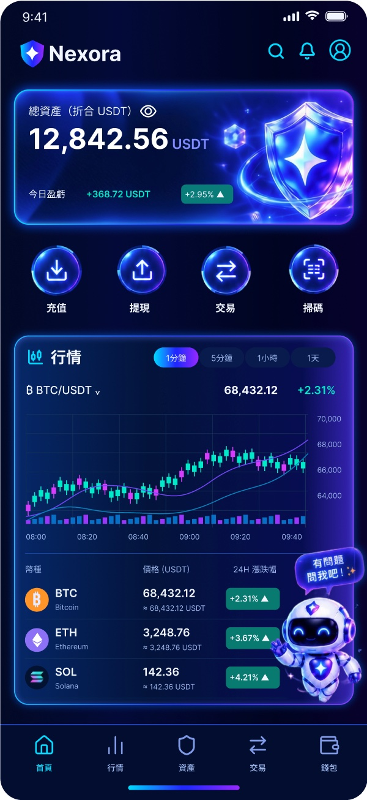
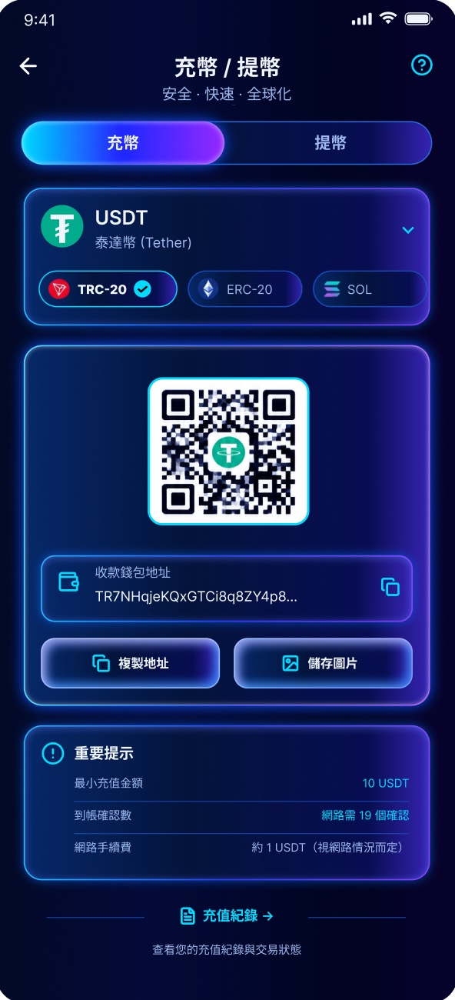
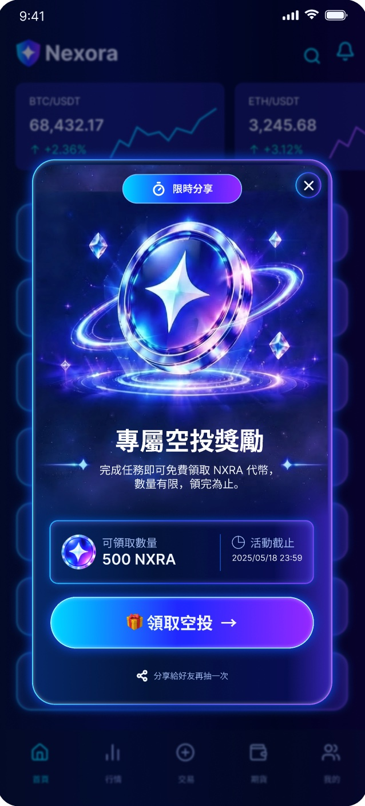